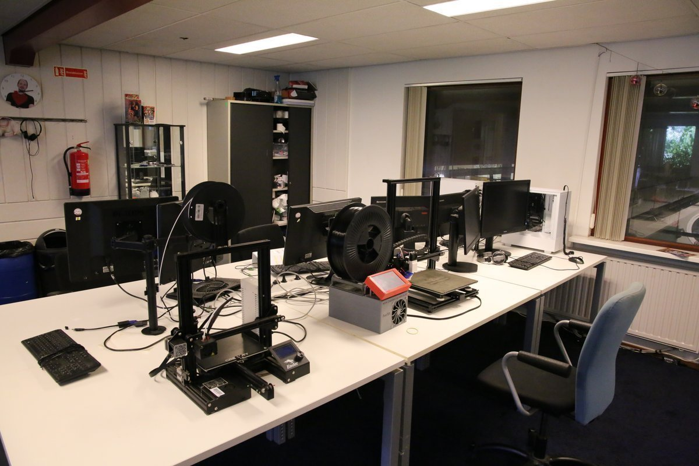
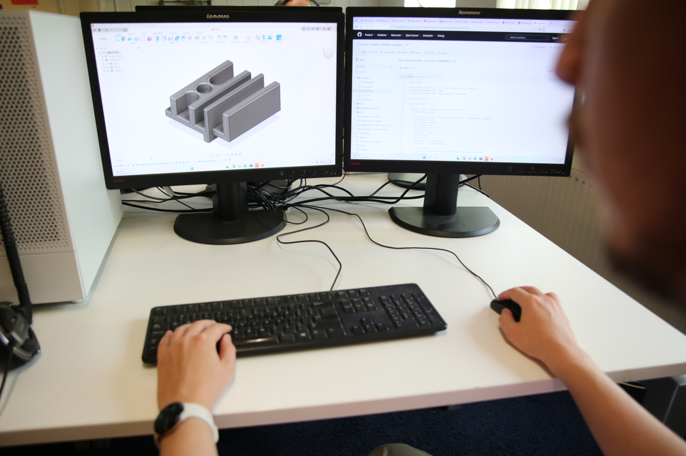
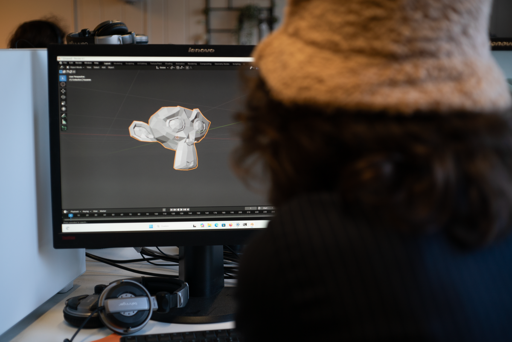
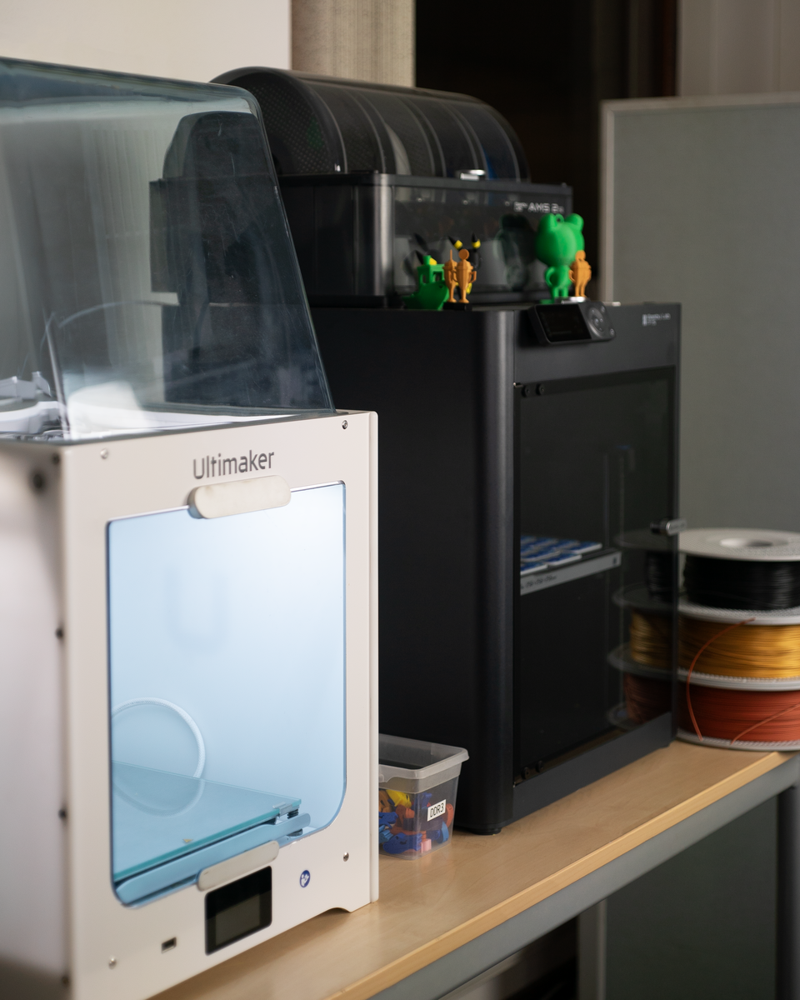

Op zoek naar hulp bij video, fotografie, grafisch ontwerp, social media of 3D prints in Weert? Bij de multimedia-afdeling ‘I-Create’ van Kr8tig brengen we ideeën tot leven met creatieve en professionele content.
De multimedia afdeling is onderdeel van Kr8tig, een bedrijf waar op verschillende plekken wordt gewerkt en geleerd. Als je binnenkomt, merk je meteen de bedrijvigheid. In andere ruimtes wordt gekookt, gebouwd of gerepareerd. In deze ruimte draait het om beeld, geluid en creatie. Hier wordt gefilmd, gemonteerd, ontworpen en geëxperimenteerd. Ideeën ontstaan, worden uitgewerkt en stap voor stap omgezet in concrete producten.
Deelnemers werken hier aan hun toekomst. Veel van hen zijn ergens anders vastgelopen of vonden moeilijk hun plek op school of werk. In deze omgeving krijgen ze de ruimte om opnieuw te beginnen. Onder begeleiding van ervaren professionals werken zij aan echte opdrachten voor echte klanten. Daardoor leren ze niet alleen de technische kant van het vak, maar ook samenwerken, plannen en omgaan met feedback.
Onze deelnemers werken aan uiteenlopende projecten, zoals:
Heb je een idee dat je wilt uitwerken? Of ben je op zoek naar creatieve ondersteuning? Je bent welkom bij de multimedia afdeling van Kr8tig.
Neem contact op via info@kr8tig.nl. Wij zijn geopend van maandag t/m vrijdag van 09.00 tot 16.00 uur.
Neem contact op voor meer info